Learn invariance once. Reuse it for every new policy.
Standard domain randomization couples visual invariance to task-specific policy weights. Every new policy must learn these invariances from scratch. INVAR separates representation learning from policy optimization, so the same frozen encoder can be reused across downstream tasks.
Prior approach
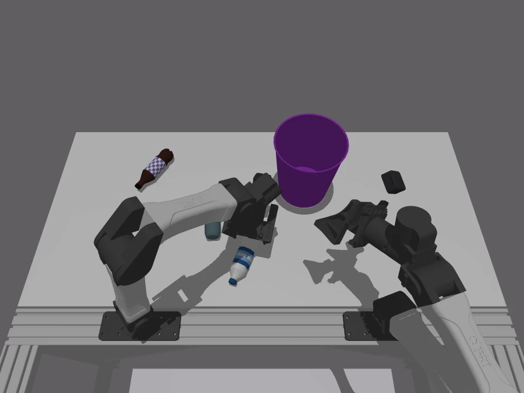
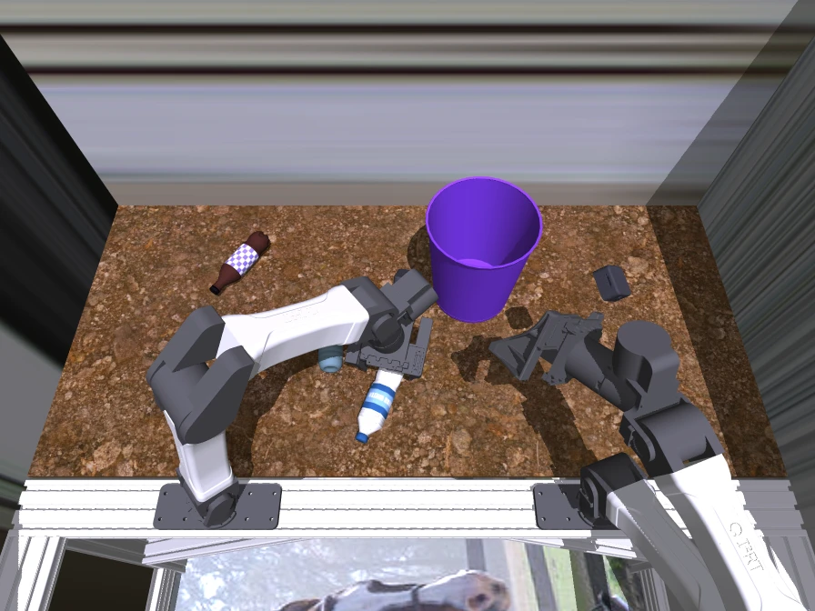
Randomize for every new policy. Each policy learns the task and how to handle changes in appearance.
INVAR (ours)
Randomize during encoder pretraining. Freeze INVAR and train each new policy on clean simulation images.
Visual invariance across
the sim-to-real gap.
Attention maps, patch-level PCA, and sim-to-real patch correspondence show how INVAR suppresses task-irrelevant appearance variation while preserving manipulation-relevant structure.
No human video in INVAR’s simulation pretraining. On this human pouring sequence, INVAR concentrates attention on manipulated objects and contact regions. DINOv3 also attends to background appearance, while CAIP remains diffuse—even though CAIP was pretrained on egocentric human video.
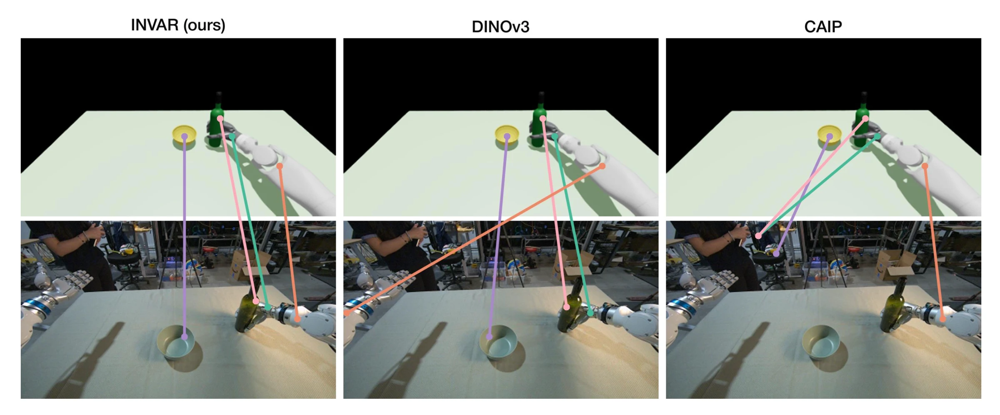
These visualizations show where the encoders respond; they do not measure what causes policy success. The real-robot and human videos were not used to adapt INVAR.
Self-distillation from
state-matched renders.
A simulator can generate paired renders from the exact same underlying state. INVAR uses these pairs for asymmetric self-distillation: the student processes randomized views and learns to match an EMA teacher that receives only clean renders.
1 Match the state
The same state, with two appearances. The student learns to ignore changes in appearance and match the teacher’s features.
Random lighting · materials · table texture · background
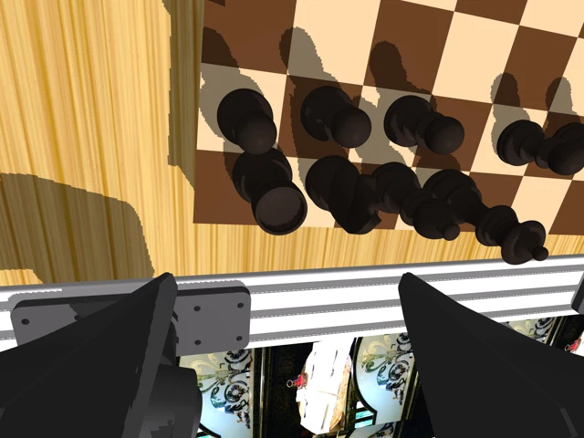
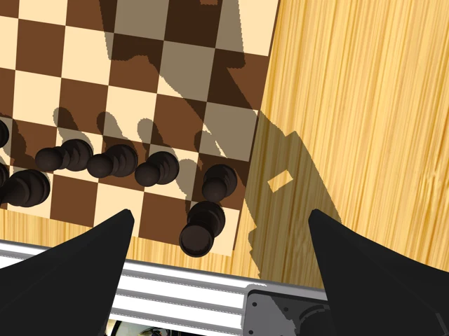
Nominal simulation appearance
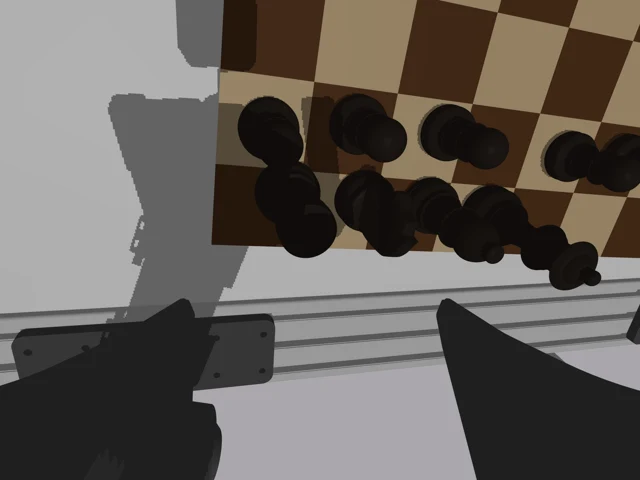
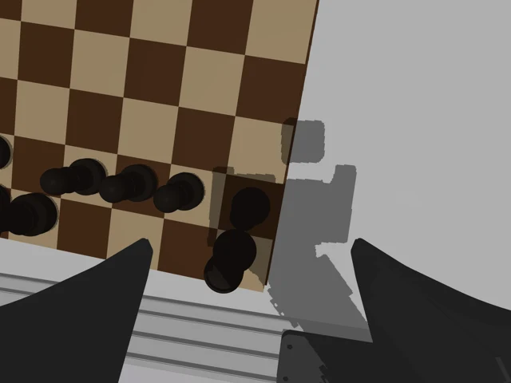
Encoded features
features
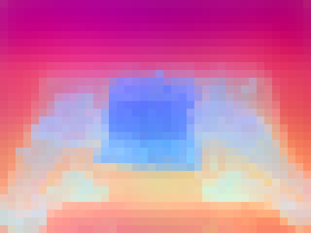
One shared PCA basis and color scale across all 27 clean and randomized camera views.
3 Freeze and reuse
Freeze INVAR after pretraining, then train each new policy on clean simulation images.
Full training pipeline and technical details
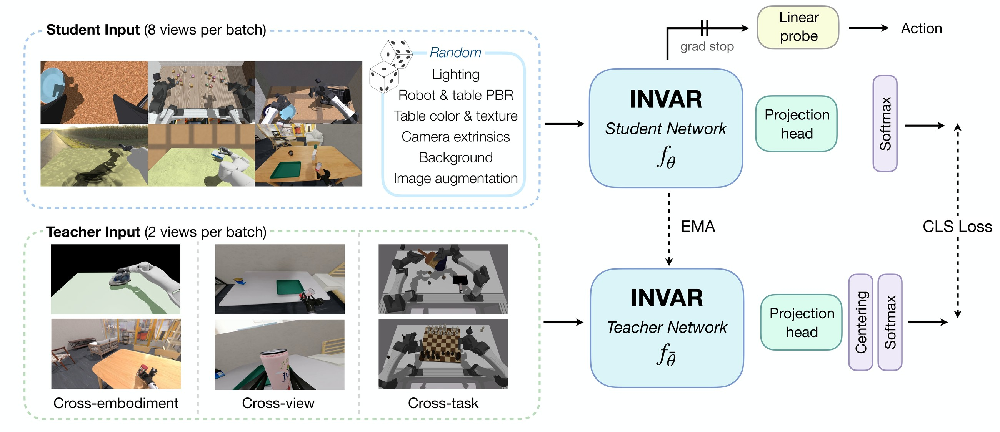
We fine-tune DINOv3 ViT-S+/16 (28.7M parameters) with two teacher crops, eight student crops, and 65,536 prototypes. Training uses teacher centering, sharpening, and EMA updates, with no task labels or rewards in the distillation loss.
We pretrain on approximately 6.3 million clean–randomized image pairs across three simulated embodiments: dexterous hand, parallel gripper, and humanoid. The corpus includes diverse tasks and camera views, with no task labels required for representation learning.
Across embodiments
Across views
Across tasks
Bimanual parallel-gripper tasks
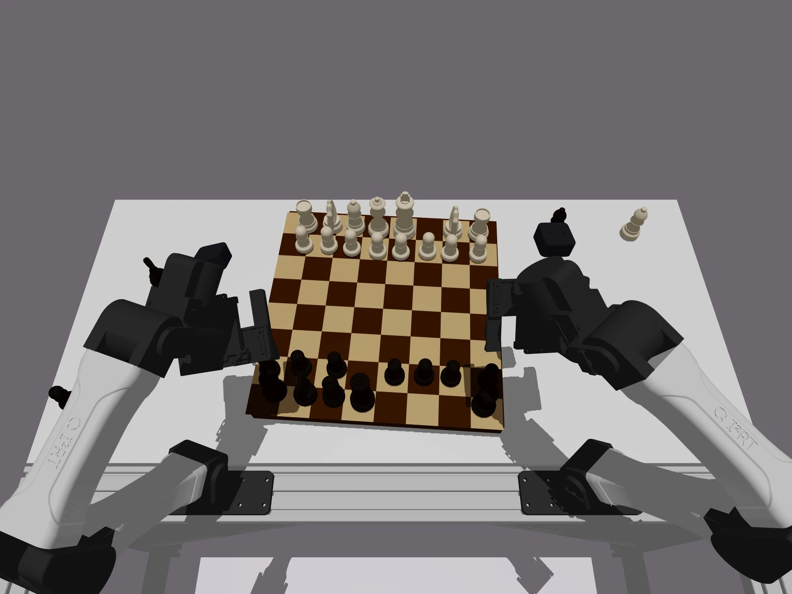
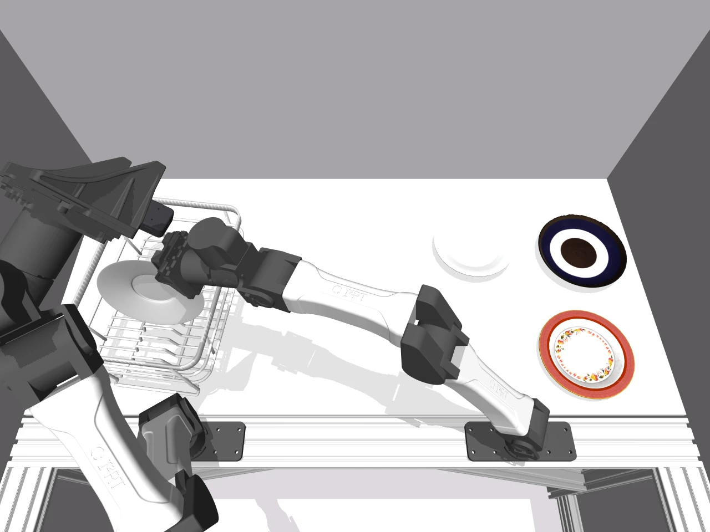
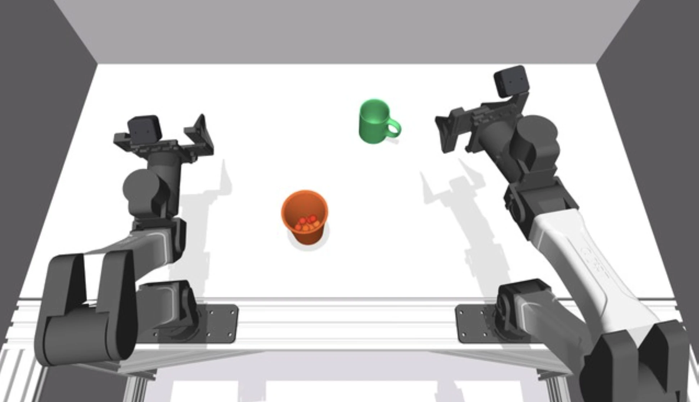
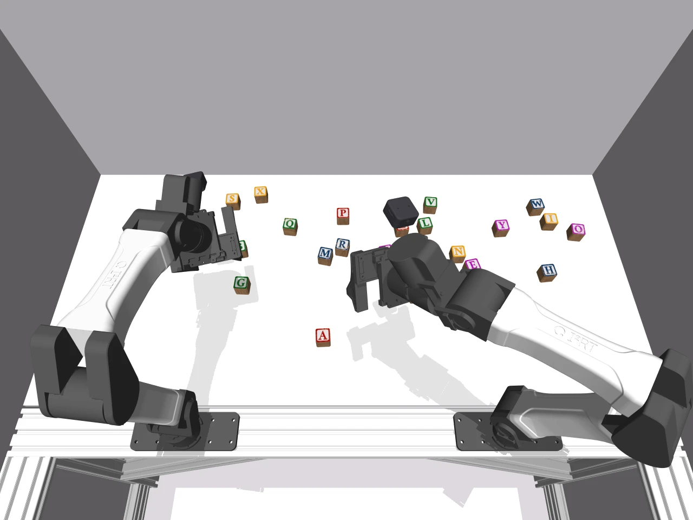
Dexterous grasping
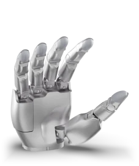
None of the evaluation objects appear in encoder pretraining. Pouring, bottle-in-bin, and mug flipping are also new tasks. Humanoid data is used only for pretraining.
Zero-shot transfer to
unseen objects and tasks.
Policies use a frozen INVAR encoder and train only on nominal simulation data. We evaluate zero-shot transfer to unseen objects across both embodiments; pouring and the parallel-gripper tasks also test unseen manipulation motions.
Robust to lighting and surface changes.
Transfer to unseen objects and tasks
Pour wine into a bowl
Neither these objects nor the pouring task appears in encoder pretraining.
24 real-world rollouts per method. Strongest evaluated baseline for this task.
Full results and evaluation setup
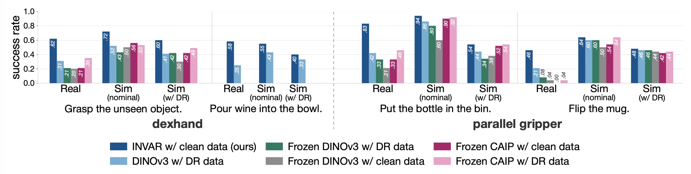
For grasping, we run 25 trials on each of five objects: 125 trials per method. Each other task has 24 real-world trials per method. Simulation tests use 50 episodes per checkpoint. All methods use the same behavior-cloning policy architecture.
| Evaluation suite | INVAR | Strongest suite baseline |
|---|---|---|
| Dexterous manipulation (five grasp objects + pouring) | 0.61 | 0.30 |
| Bimanual parallel gripper (bottles + mug) | 0.65 | 0.32 |
The table reports suite averages; the charts above compare each task with its strongest tested baseline. For pouring, we compare with DINOv3 trained with DR.
Downstream policies
also converge faster.
INVAR also accelerates downstream policy learning, reaching 90% of peak performance about 1.5× faster than the fastest baseline.
faster convergence
The threshold is 90% of each method’s own peak success.Nominal simulation
Simulation with visual DR
Mean training epoch to 90% of each method’s peak success ↓
Averaged across five training runs. Paper Table 1.
How pretraining data
affects real-world transfer.
At a fixed pretraining budget, broader embodiment diversity improves real-world transfer. Increasing task and object diversity also helps, and real-world success scales with the number of pretraining pairs.
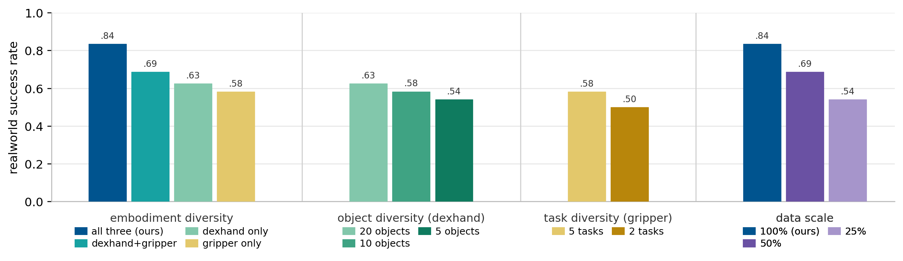
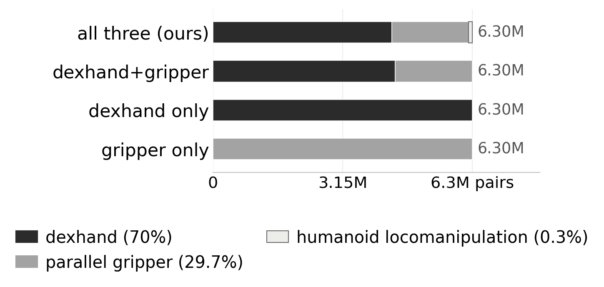
5 → 10 → 20 objects
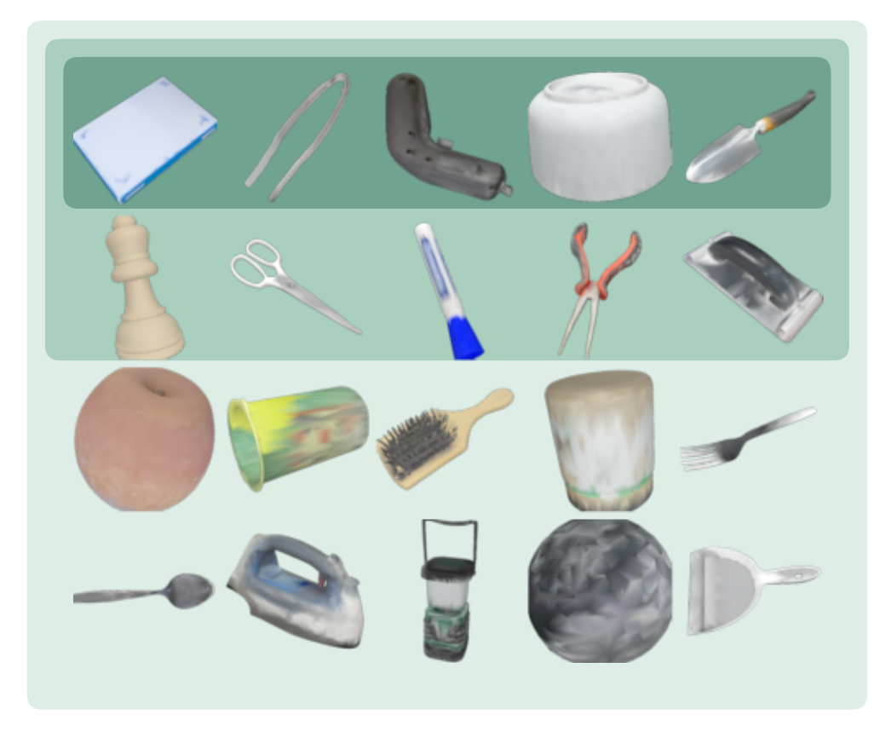
2 → 5 tasks
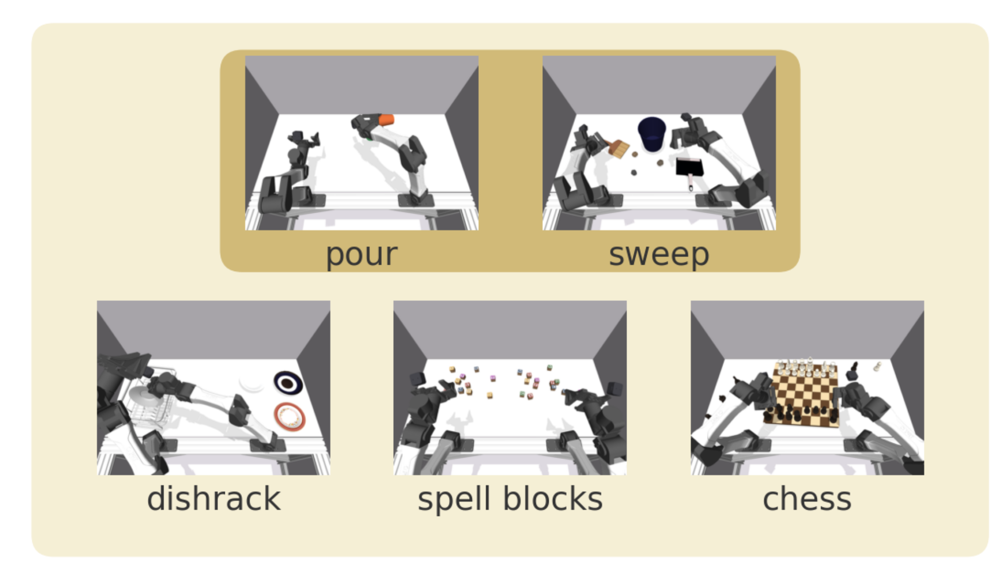
Paper Table 2. These ablations use 12 real-world trials per task: hammer and spray-bottle grasping, and bottles into a bin. They are separate from the main benchmark.
More ablation results
Cross-embodiment diversity
With one robot type, increasing the grasping set from 5 to 20 objects raises success from 54% to 63%. Increasing gripper tasks from 2 to 5 raises success from 50% to 58%. Adding data from other robot types gives a larger gain.
The asymmetric objective
With the same data, architecture, and training budget, giving randomized images to both networks lowers real-world success from 84% to 42%. Keeping the teacher’s view clean works better.
Visual randomization as a one-time pretraining cost.
Generate the randomized simulation corpus once, pretrain INVAR, and reuse the frozen encoder across downstream policies trained on nominal simulation.
INVAR addresses differences in appearance, not geometry, dynamics, or actuation. We evaluate it with behavior-cloning policies.